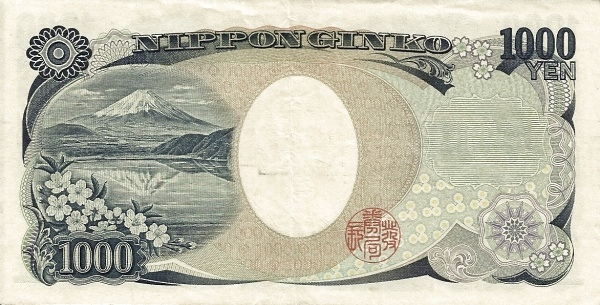

Япония - Иена
1000 иен
Лицевая сторона - Ногути, Хидэё
Обратная сторона - Гора Фудзи, озеро Мотосу и цветение сакуры
5000 иен
Лицевая сторона - Хигути, Итиё
Обратная сторона - «Какицубата-цу» (Картина Огаты Корина, изображающая ирисы)
10000 иен
Лицевая сторона - Фукудзава Юкити
Обратная сторона - Изваяние феникса из храма Бёдо-ин